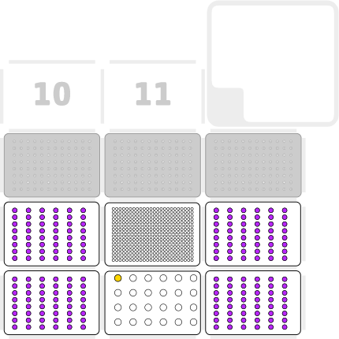

Lesley Ives
12 March 2024
OP_PD_006 v1.0
PCR Plate Preparation
Description
This protocol transfers reagent and samples to a 384 well PCR plate ready for PCR amplification.
Labware and Liquids

- Left mount: An 8-channel p20 pipette (GEN2)
- Right mount: An single-channel p20 pipette (GEN2)
- Slots 1, 3, 4, and 6: 96 well rack containing PCR strips in every other column. The PCR strips contain the samples for PCR.
- Slot 2: Eppendorf tube rack containing 1 x 2ml tube containing reagents.
- Slot 5: 384 well PCR plate
- Slots 7, 8, 9: 20µl Tip Racks
Execution
- Set up the deck as described above and as in the initial protocol pause step.
- Run the protocol.
Script
PCR Plate Preparation
Tips and best practices
Carry out a test run of the protocol using the labware and water to ensure that the positioning of labware and tips is suitable. Re-calibration of the deck or labware may be required.
Ensure that the strip tubes are in the odd columns of each tube rack. If tube racks are unavailable a PCR plate can be used to hold the PCR strips.